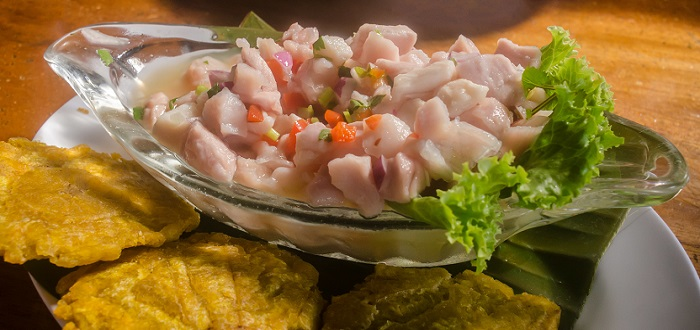
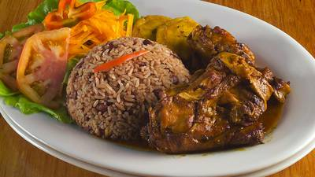
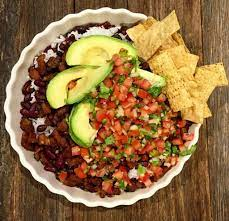

PRINCIPAL
PARQUES
COMIDAS
ACTIVIDADES
POPULARES
VIDEOS

Ceviche en Guanacaste exelente elecion

Comida tipica de limon Arroz pollo y enzalada.
Comida tipica de limon Arroz pollo y enzalada.
Comida tipica de limon Arroz pollo y enzalada.

Chifrijo una convinación de aguacate chicharron frijoles tostadas chimichurri y arroz..
Visitar
Comidas Tipicas Limon
 Visitar
Visitar